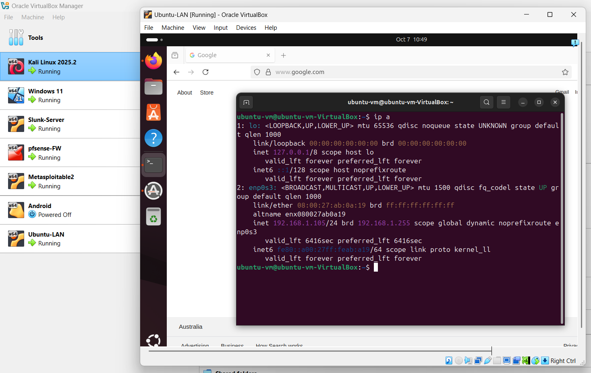

üõ°Ô∏è VirtualBox Isolated Pentest Home Lab
This project involved setting up a fully isolated penetration testing lab using VirtualBox. It simulates a secure network environment for red and blue team operations, focusing on vulnerability discovery, packet analysis, and defense mechanisms.
üí° Lab Objectives
- Conduct penetration testing in an isolated and controlled environment
- Test detection tools (Snort, Splunk) against real attacks
- Harden internal network with pfSense firewall rules
- Monitor and analyze traffic via Wireshark and Splunk
üó∫Ô∏è Network Topology

VirtualBox Home
Kali Linux
Windows 11
Ubuntu
PfSense
Splunk Server

Metasploitable
üõ†Ô∏è Tools & Configuration
- Firewall & Routing: pfSense (NAT + LAN + firewall)
- Offensive System: Kali Linux
- Targets: Metasploitable2, Windows 11 VM
- Monitoring: Splunk (SIEM), Wireshark (packet capture)
- Other Tools: Netdiscover, Nmap, Snort, DVWA